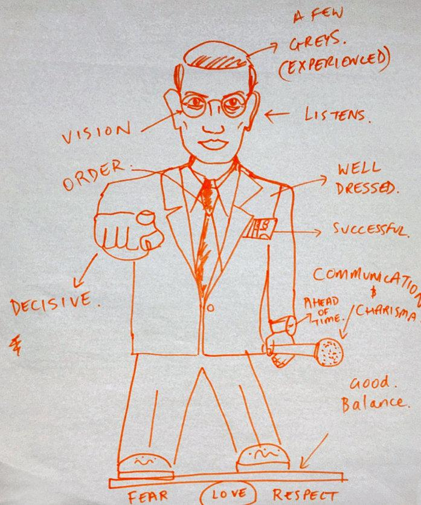
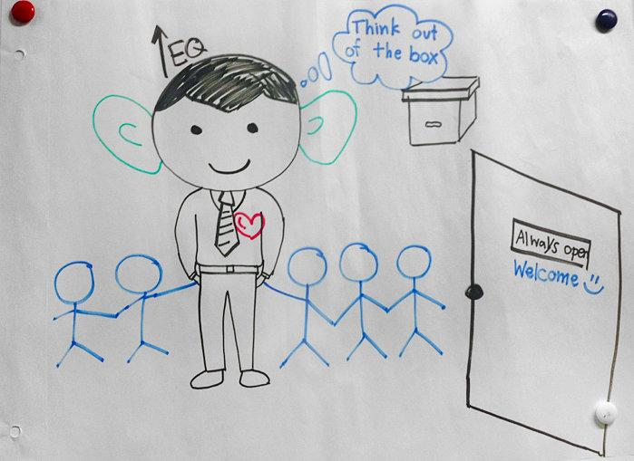
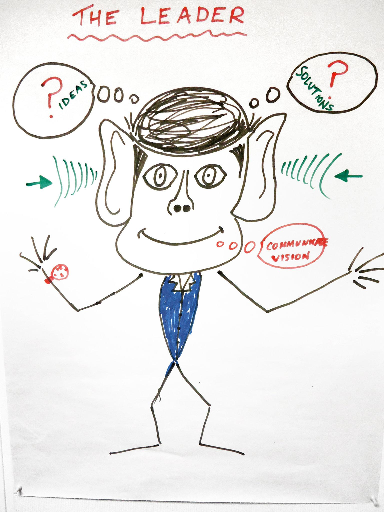

Draw an effective leader. In your drawing, include the appearance, qualities and behaviors of a leader.
1. What similarities and differences do you notice between your drawing and the ones from the page? Do these illustrations surprise you? Why or why not?
2. Who is someone in your own life or from public life you consider to be a great leader and why?
3. In your opinion, what makes a person a great leader? What qualities does she or he have? How does she or he act? Given this criteria, do you think women and men can be equally effective leaders? Why or why not?
4. Have your leadership abilities ever been overlooked, or have you ever underestimated someone else’s leadership abilities, because of gender — whether in class, group projects, sports teams, clubs or other group activities? If so, what was that experience like?